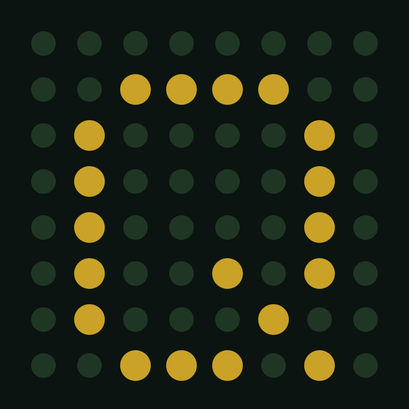
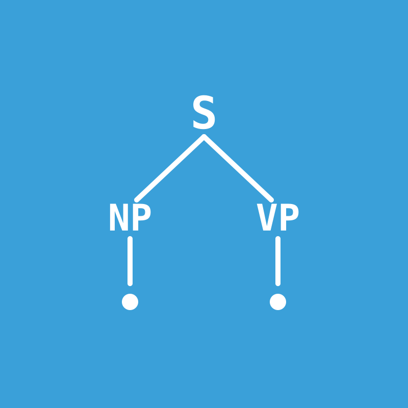
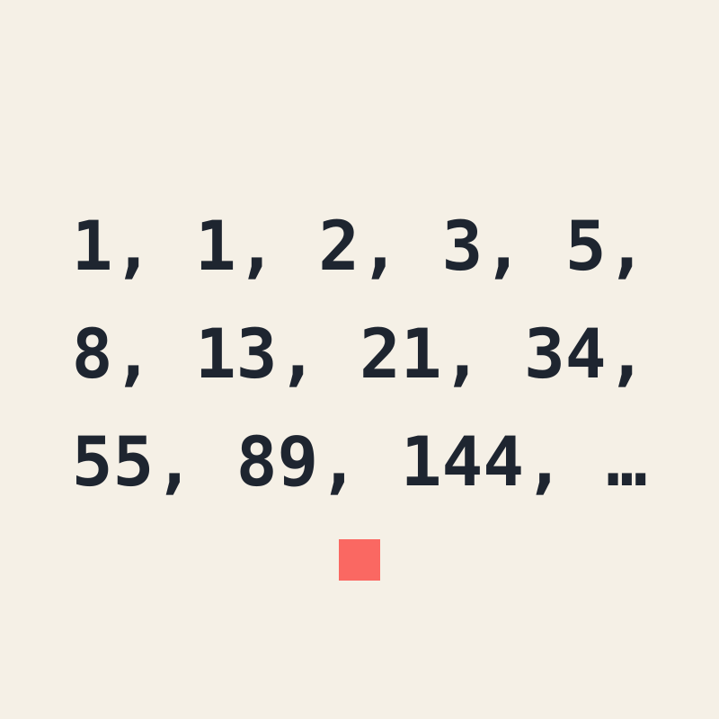
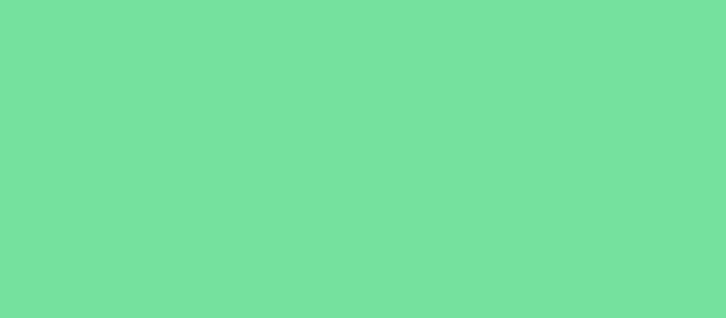

My projects projects

QGraphic
Language + Graphics EngineA bespoke programming language and graphics engine for an LED Matrix display: API connections, WebSocket connectivity, a full text editor with linting and auto-formatting, and image/animation editing tools. Written in Python with TSPMO support. Bootstrapped in QGraphic.

Synta
Web App, Language DesignA browser studio for syntax trees: bracketed notation and a flat .synta format render to canvas, styled by SYT — a small indentation-sensitive scripting language interpreted live in the browser. Runs right here on this site.
Puissant Royale – Classicube
Game, Large CodebaseOpen source. Implemented and refined world generation algorithms by modifying wave function collapse using C#. Designed and programmed a low-level bootstrapped scripting language for NPCs using C# and Lua. Managed server health using MCGalaxy and databases using MySQL.
Daily Games
Browser Games, DeterminismOriginal daily puzzle games built for this site — engineer and fly a rocket in Daily Rocket, race a procedurally generated stage in Daily Rally. Fully deterministic: every player in the world gets the same challenge each day.

OEIS Proofs
Number TheoryProved 3 open problems in number theory on OEIS, the Online Encyclopedia of Integer Sequences.

Luna
Smart MirrorA personal smart mirror build.